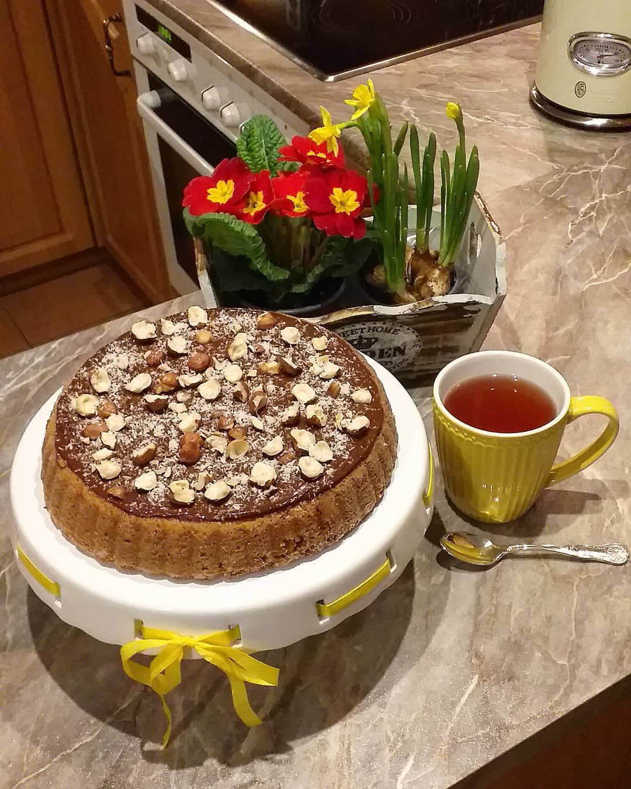

Zbylo mi doma pár "unavených"😄🍌🍌 banánů a tak jsem upekla rychlý banánový koláč...💛🙋🏻♀️ #baking #bakingtime #bakingwithlove #bakingacake #cake #bananacake #bananabread #pecenijeradost #peceni #pečení #mybaking #mybakingadventure #bakingday #homebaking #pecenie #upeceno #upecenoslaskou #sweets #bananovykolac #kekaficku #sweetslover #dezert #nutsandchocolate #bakingcooking #bakingtherapy #homemade #kolac #cakelover #bakedwithlove #springdecor